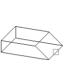
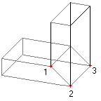

|
Mirror3D Method |
Creates a mirror image of the given object about a plane.
Signature
RetVal = object.Mirror3D(Point1, Point2, Point3)
Object
All Drawing Objects
The object this method applies to.
Point1
Variant (three-element array of doubles); input-only
The 3D WCS coordinates specifying the first point of the mirror plane.
Point2
Variant (three-element array of doubles); input-only
The 3D WCS coordinates specifying the second point of the mirror plane.
Point3
Variant (three-element array of doubles); input-only
The 3D WCS coordinates specifying the third point of the mirror plane.
RetVal
Mirrored object
This object can be one of any Drawing Objects.
Remarks


Object mirrored about a plane defined by three points
AutoCAD checks to see if the object to be copied owns any other object. If it does, it performs a copy on those objects as well. The process continues until all owned objects have been copied.
NOTE You cannot execute this method while simultaneously iterating through a collection. An iteration will open the work space for a read-only operation, while this method attempts to perform a read-write operation. Complete any iteration before you call this method.
AttributeReference: You should not attempt to use this method on AttributeReference objects. AttributeReference objects inherit this method because they are one of the drawing objects, however, it is not feasible to perform this operation on an attribute reference.
| Comments? |